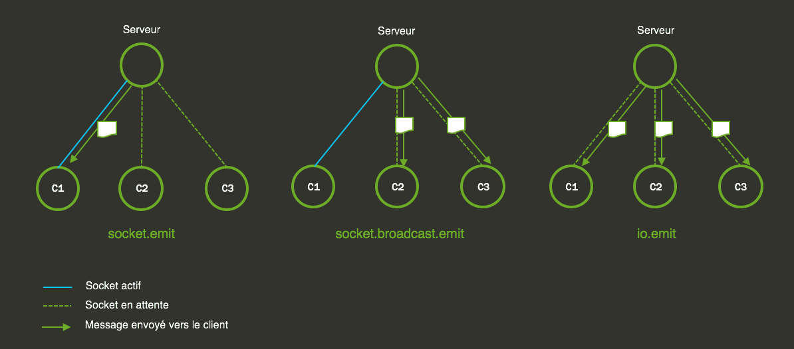

TP 7 - Socket IO
L’objectif de ce TP est d’utiliser Socket IO pour créer un mini jeu Client / Serveur en temps réel.
Principe du jeu
Le mini jeu oppose deux joueurs dans un duel de réflexe. Le jeu présente une grille sur laquelle apparaîtra de façon aléatoire un carré coloré cliquable. Le premier joueur cliquant sur le carré obtient un point. La partie est terminée lorsque l’un des joueurs atteint le score de 5 points.

Directives
Pour ce TP la partie cliente est déjà développée. Vous aurez donc à charge de développer la partie back-end, c’est-à-dire le serveur Socket. Ce serveur viendra se greffer sur le serveur Express. Vous devrez gérer un certain nombre d’actions comme suivant :
- Gérer les connexions/déconnexions clients,
- Gérer la file d’attente des joueurs,
- Lancer la partie quand tous les joueurs sont prêts,
- Envoyer à intervalle régulier la nouvelle position d’un carré,
- Compter le score et synchroniser les informations entres les joueurs,
- Indiquer le gagnant lorsque le score est atteint.
Rappel
Voici un rappel du principe des communications entre le client et le server avec SocketIO :

Exercice
Si besoin vous avez les sources du tp6-provided.
Installation
npm install --save socket.io
npm install --save-dev @types/socket.io
Copiez aussi le partial webapp/partials/square-game.html.
1ère étape
Nous devons créer une nouvelle classe pour gérer le server SocketIO.
Voici son squelette :
const settings = require('./../../../resources/square-game.json');
export default class SquareGameWS {
/**
*
*/
static MAX_PLAYERS: number = settings.MAX_PLAYERS;
/***
*
* @type {number}
*/
static SCORE_MAX: number = settings.SCORE_MAX;
/**
*
* @type {Map<string, SocketIO.Socket>}
*/
static players: Map<string, PlayerSG> = new Map<string, PlayerSG>();
/**
*
*/
static tick;
private player;
constructor (
private io: SocketIO.Server,
private socket: SocketIO.Socket
) {
console.log('New connection, ID =>', socket.id);
//premier événement, ajout d'un utilisateur
socket.on('client.player.add', this.onAddPlayer);
//player say i'am ready
socket.on('client.player.ready', this.onPlayerIsReady);
//start interval
socket.on('client.start.game', this.onStartGame);
//delete square
socket.on('client.delete.square', this.onDeleteSquare);
//player disconnect
socket.on('disconnect', this.onDisconnect);
}
/**
* Ajoute une joueur à la liste des joueurs.
* Emet l'événement 'newplayer' si le joueur vient d'être créé.
* @param name
*/
public onAddPlayer = (name: string): void => {};
/**
*
* @param io
*/
public onStartGame = (): void => {};
/**
*
*/
public onPlayerIsReady = (): void => {};
/**
*
*/
public onDeleteSquare = (): void => {};
/**
*
*/
public onDisconnect = (): void => {};
/**
*
*/
public updatePlayersReady(): void {}
/**
*
*/
public sendSquarePosition = (): void => {};
/**
*
* @returns {number}
*/
static getNbPlayersReady(): number {
return 0;
}
/**
* Retourne la liste des joueurs.
* @returns {Array}
*/
static getPlayers(): PlayerSG[] {
return null;
}
static stopGame(): void {}
}
Nous allons donc développer les méthodes nécessaires aux fonctionnement de notre jeu dans les étapes suivantes.
2e étape
Maintenant nous allons attacher le server Socket au serveur Express. Voici la façon de procédé :
class Server {
private io: SocketIO.Server;
start() {
if (this.port) {
const server = this.app.listen(this.port, () => {
console.log(`Server binded on port ${this.port}`);
});
this.io = SocketIO(server);
this.io.on('connection', (socket) => {
new SquareGameWS(this.io, socket);
});
}
}
}
3e étape
Nous allons maintenant réaliser les actions de notre jeu. Vous devrez développer les événements et méthodes qui suivent :
Evénements entrants
client.player.add
Cet événement gère l’ajout d’un joueur à la file d’attente.
Si la file d’attente est pleine, le joueur ne sera pas ajouté.
Dans le cas contraire la méthode ajoute l’utilisateur à la file
d’attente et un événement server.player.new est envoyé à tous les
clients connectés.
client.player.ready
Le client indique au serveur que le joueur enregistré est prêt à jouer.
La méthode doit stocker l’état du joueur est renvoyer la liste des joueurs
aux clients via l’évènement server.update.players.ready.
Si tous joueurs sont prêts alors la méthode doit émettre un événement
server.start.countdown.
client.start.game
Une fois que le countdown est terminé, les clients vont émettre un événement client.start.game. Cet événement côté
serveur lancera un « Timer » qui émettra à un intervalle régulier l’événement server.update.square.
client.delete.square
Cet événement est envoyé par un client lorsque le joueur clique sur le carré.
La méthode va donc incrémenter le score du joueur ayant cliqué le carré.
Un premier événement server.deleted.square sera envoyé à l’ensemble des clients
pour indiquer que le carré est à supprimer.
Si le score de 5 points est atteint par l’un des joueurs, les actions suivantes sont effectuées :
- Interruption du « Timer ».
- L’événement « playerloose » est diffusé.
- L’événement « playerwin » est émis vers le client associé au socket.
disconnect
Cet événement est généré lorsqu’un client se déconnecte du serveur.
L’objectif est de supprimer le joueur de la file d’attente est d’interrompre et de stopper le
« Timer » si il est actif. Un événement server.stop.game sera diffusé vers les clients connectés pour stopper le jeu.
Evénements sortants
server.player.new
Indique à l’ensemble des clients qu’un nouveau joueur est enregistré.
- Type : broadcast
- Paramètre : La liste des joueurs.
server.update.player.ready
Indique à l’ensemble des clients qu’un joueur est prêt à jouer.
- Type : broadcast
- Paramètre : Liste des joueurs.
server.start.countdown
Indique aux clients que tous les joueurs sont prêts et que le compte à rebours doit démarrer.
- Type : broadcast
- Paramètre : aucun
server.update.square
Indique aux clients la nouvelle position du carré à cliquer.
- Type : broadcast
- Paramètre : un object square
server.deleted.square
Indique à l’ensemble des joueurs que le carré a été cliqué par l’un des joueurs.
- Type : broadcast
-
Paramètres :
- La liste des joueurs,
- Le joueur ayant cliqué le carré.
server.player.loose
Indique à l’ensemble des clients, sauf celui associé au socket, qu’ils ont perdu.
- Type : socket.broadcast.emit
- Paramètre : Le joueur ayant gagné.
server.player.win
Indique au client associé au socket qu’il a gagné.
- Type : socket.emit
- Paramètre : Le joueur ayant gagné
server.stop.game
Indique aux clients que le jeu est stoppé suite à la déconnexion d’un joueur.
-
Type : broadcast
-
Paramètres :
- L’utilisateur déconnecté,
- La liste des joueurs.
Classe de donnée PlayerSG
Voici un exemple de la structure d’un joueur :
export default class PlayerSG {
/**
*
*/
name: string;
/**
*
*/
isReady: boolean;
/**
*
*/
private score: number = 0;
constructor(private userId: string) {
}
/**
*
*/
public scoreUp(): void {
this.score++;
}
/**
*
* @returns {number}
*/
public getScore(): number {
return this.score;
}
/**
*
*/
public toJSON = (): any => ({
userId: this.userId,
name: this.name,
score: this.score,
isReady: this.isReady
});
}
Modèle Square
Voici un exemple du modèle de données d’un carré :
{
"index": 1,
"bgc": "#FFFFFF"
}
Règles :
- La valeur de l’index est comprise entre 0 et 12.
- La valeur de
bgcest un code couleur hexadécimal.
Ces deux valeurs sont à définir de façon aléatoire. Pour définir un code couleur hexadécimal aléatoire voici un exemple de code :
"#" + ((1<<24) * Math.random() | 0).toString(16)